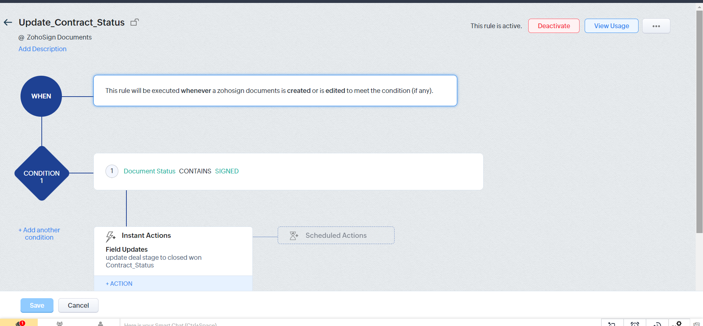
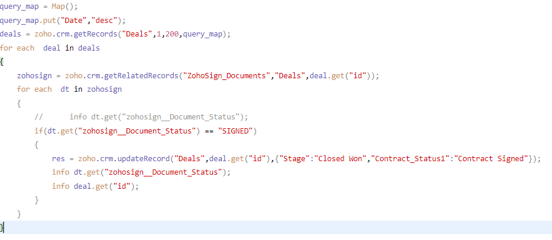

Contract-to-CRM automation
Signed-document conditions and Deluge logic connect contract status with CRM deal updates.
- Organization
- BritePH
- Focus
- CRM automation
- Shown here
- Workflow configuration & Deluge code
The problem
Contract signing and CRM updates can become separate tasks, leaving deal information out of step with the signed document.
The approach
A ZohoSign workflow checks signed status and lists immediate field updates. The accompanying Deluge excerpt checks related documents and sets the deal stage and contract status.
Workflow details
- A created or edited document meets a signed-status condition.
- Related documents are checked for SIGNED status.
- The shown code updates the deal to Closed Won and the contract to Contract Signed.
Intended value
The configuration is intended to reduce repeated manual updates and keep pipeline information timely.
Workflow & code
Select a screenshot to enlarge it.
{kind=link}

Enlarge screenshot{kind=link}

Enlarge screenshotProject scope & source
Workflow configuration and partial code. Execution, full record coverage, and exception handling are not demonstrated; the shown deal query requests one page of up to 200 records.
The source also includes separate Ticket Tailor and Zoho Creator code excerpts for event retrieval and weekly report records. Their relationship to the contract workflow is not established.
Source: RG and BritePH Project Case Studies Revised. Project-specific delivery dates and individual responsibilities are not specified in the source.
Planning a similar project?
Discuss a project